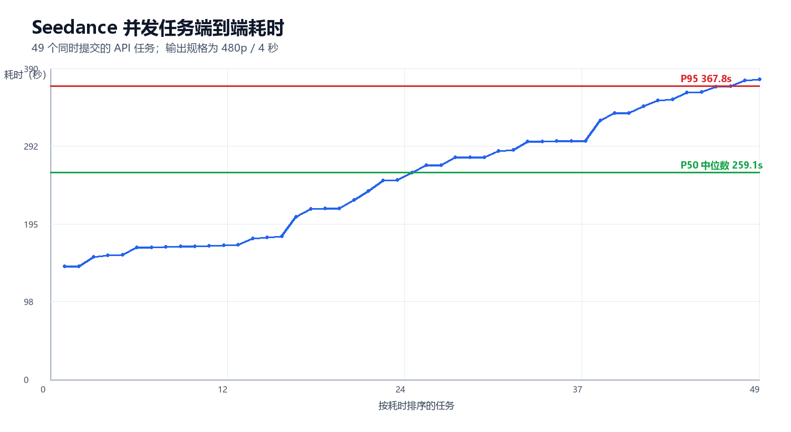
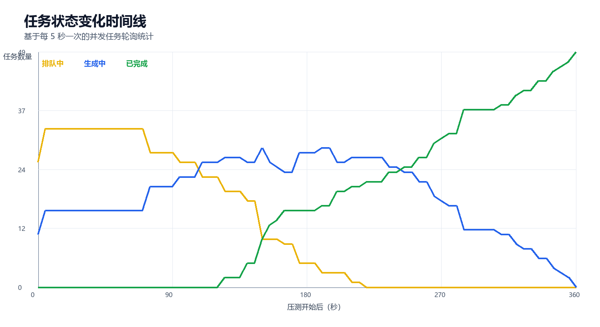
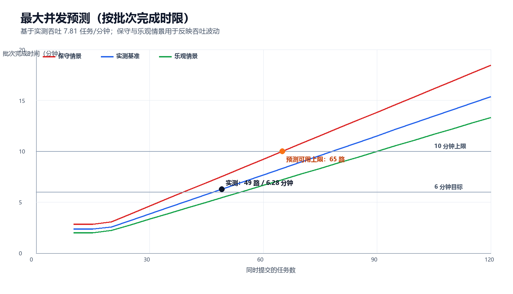
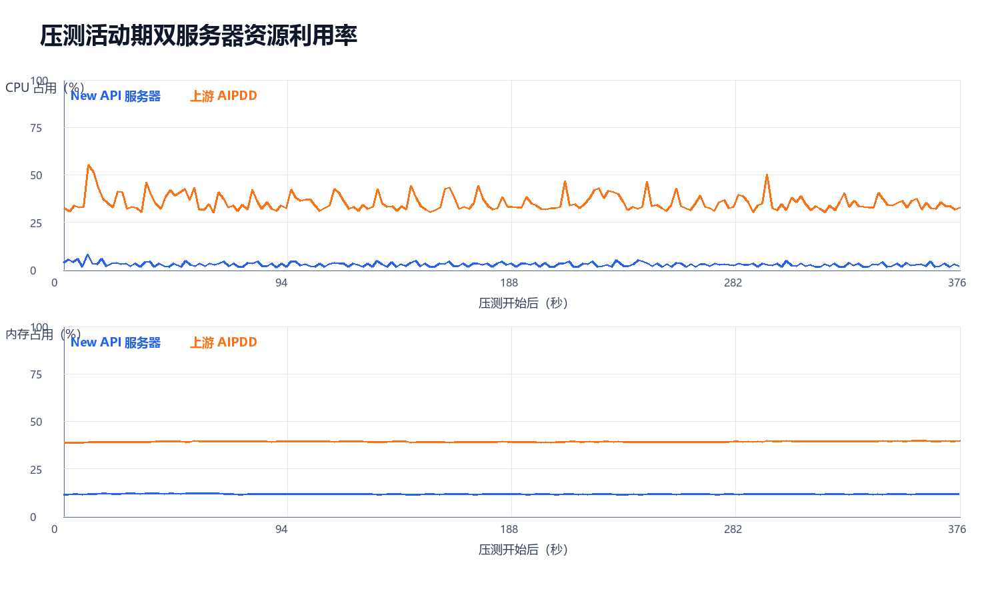
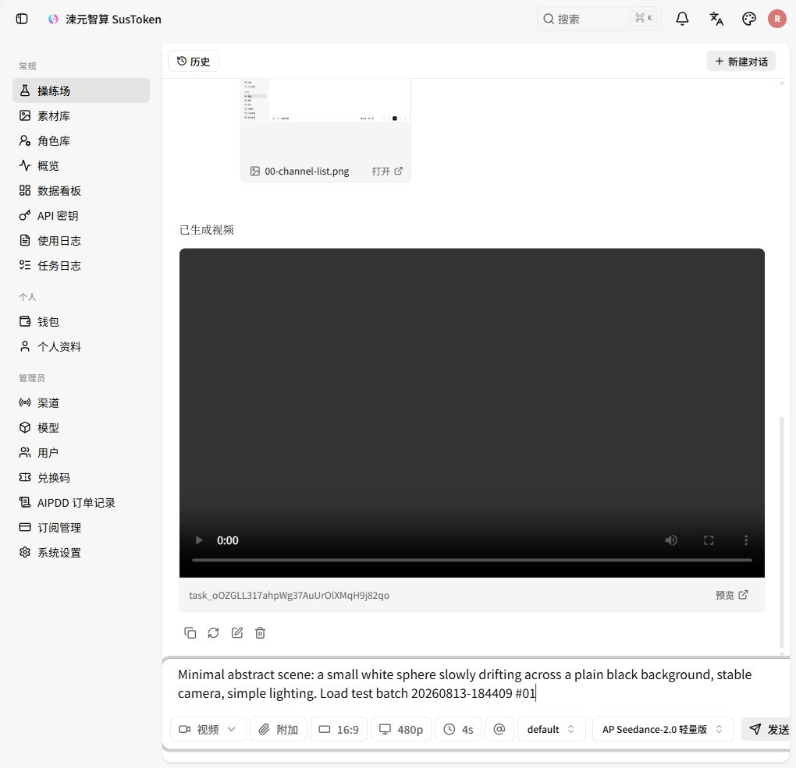
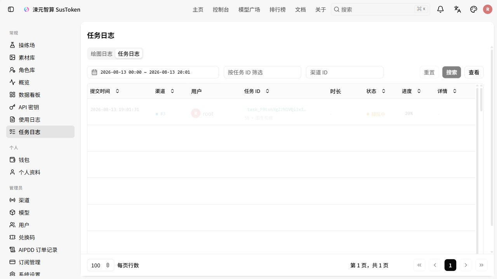
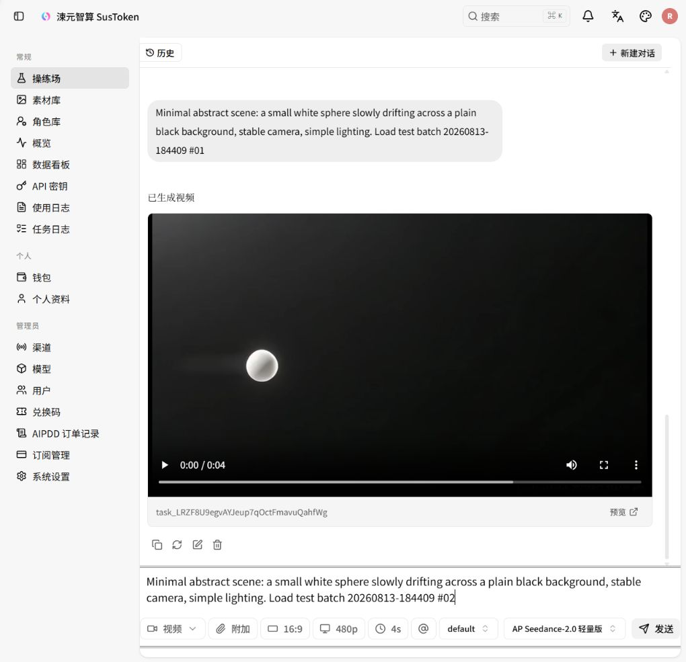
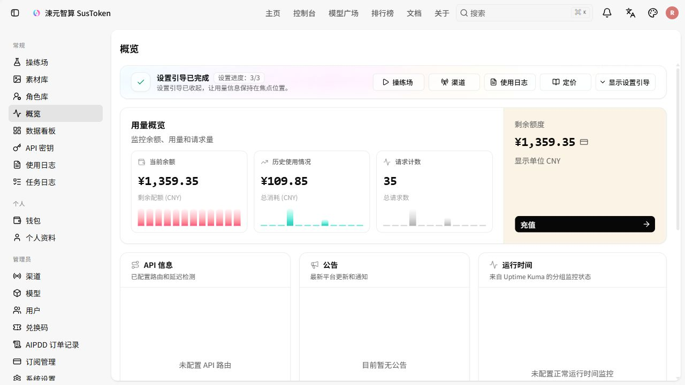

浏览器操练场会串行等待单个视频完成，因此本次由 1 个浏览器探针任务和 49 个通过同一公网 /v1/videos 路径同时释放的任务组成。性能分位数基于 49 个同时请求。
核心结果


生成速度分位数
发送请求 → 提交任务/接口受理（约 7–12 秒） → 排队等待（平均约 101 秒） → 视频生成（平均约 142 秒） → 任务完成
/v1/videos 到 New API 返回任务 ID 的时间，表示任务已进入系统，不代表视频已经生成。排队等待是已提交但尚未获得生成 Worker 的时间；视频生成耗时是开始生成到 SUCCESS 的时间；端到端完成耗时则从最初请求一直算到视频完成，包含以上所有阶段。
| 指标 | 最小 | P50 | P95 | P99 | 平均 | 最大 |
|---|---|---|---|---|---|---|
| 提交任务/接口受理 | 7.21s | 8.30s | 10.67s | 12.04s | 8.75s | 12.13s |
| 排队等待（近似） | 5.65s | 116.82s | 208.38s | 222.63s | 101.24s | 228.30s |
| 视频生成阶段（近似） | 100.15s | 138.55s | 170.19s | 197.91s | 142.47s | 209.59s |
| 端到端完成 | 141.77s | 259.12s | 367.76s | 375.99s | 252.46s | 376.58s |
注意：7.81 个/分钟（约每 7.68 秒完成一条）是整个并发批次的输出吞吐，不是单个视频只需 8 秒。单个任务从发出请求到完成，平均约 252 秒；其中实际视频生成平均约 142 秒。
最大并发预测
预测采用饱和吞吐排队模型，以实测 7.81 个任务/分钟为基准，并用 6.5 个任务/分钟作为保守情景。推荐峰值 45 路接近本次已验证负载且留有波动余量；预测可用上限 65 路的定义是：即使落入保守情景，单批任务预计仍可在 10 分钟内清空。
| 批次完成时限 | 保守 6.5/分钟 | 实测基准 7.81/分钟 | 乐观 9.0/分钟 |
|---|---|---|---|
| 5 分钟 | 32 路 | 39 路 | 45 路 |
| 6 分钟 | 39 路 | 47 路 | 54 路 |
| 10 分钟 | 65 路 | 78 路 | 90 路 |

65 路是带有“10 分钟内清空”约束的预测可用上限，并非接口的绝对拒绝点。100 路预计需约 12.81 分钟清空，保守情景约 15.38 分钟，已进入明显排队风险区。该预测应通过下一轮 65 路真实任务验证。
服务器资源
| 主机 | CPU 基线 | CPU 平均 | CPU 峰值 | 内存平均 | 内存峰值 | Load 1m 峰值 |
|---|---|---|---|---|---|---|
| New API 14.103.100.4 | 2.37% | 2.84% | 8.23% | 11.71% | 12.18% | 0.15 |
| 上游 AIPDD 8.219.81.18 | 33.39% | 35.44% | 55.19% | 39.32% | 39.81% | 1.65 |

New API 网关没有形成资源瓶颈；主要延迟来自上游排队与视频生成。上游实际 GPU Worker 不在所提供服务器中，因此本报告不包含 GPU 和显存指标。
成本与账务
| 项目 | 测试前 | 测试后 | 变化 |
|---|---|---|---|
| 余额 | ¥1,359.35 | ¥1,295.35 | -¥64.00 |
| 历史使用 | ¥109.85 | ¥173.85 | +¥64.00 |
| 请求计数 | 35 | 85 | +50 |
最低标价核对：¥0.32 × 4 秒 × 50 = ¥64.00，与实际扣费完全一致。数据库保存了 50 条任务、状态全部为 SUCCESS。
关键证据截图
最低成本配置

任务执行中

浏览器探针成功

测试前余额

证据完整性
- 数据库任务：50 行，ID 193–242，全部 SUCCESS。
- 任务轮询：909 条事件。
- 服务器采样：New API 495 个，上游 AIPDD 495 个，采样错误为 0。
- 容量预测：
capacity-forecast.json、capacity-forecast.csv和中文预测图均保存在本目录。 - 报告归档：
REPORT.html与已转换的REPORT.pdf均保存在本目录。 - 原始文件、逐任务 CSV、汇总 JSON、脚本、截图和图表均保存在本目录。
完整方法、限制和后续容量建议见 REPORT.md。